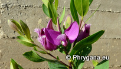

| PHRYGANA | Fauna | Flora |
additions nouveautés |
espèces species |
contact-
info-commentaires: phrygana1 (at) gmail.com |
| diversité crétoise -- Cretan diversity | |||||
| Cretan P O L Y G A L A C E A E de Crète |
|
|
 |
||||
| Polygala myrtifolia |
| 02 janvier 2011 |
| © paul fontaine -- © Phrygana.eu 2007 -- 2013 |